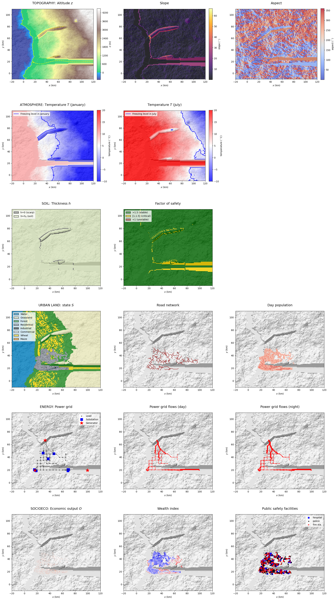

Tutorial 3: Implementing multi-risk in the GenMR digital template
Author: Arnaud Mignan, Mignan Risk Analytics GmbH
Version: 1.2.1
Last Updated: 2026-06-29
License: AGPL-3
IN CONSTRUCTION - Please come back in late September 2026 for the official version.
A tutorial on catastrophe dynamics, demonstrating how to model chains-of-events and their cascading impacts.
v.1.2.1 (ongoing, due Sep. 2026): Implementation of the Multi-Risk Core, consisting of the modelling of chains-of-events and risk drivers within the GenMR framework (including potentially some ad-hoc parameterisations before v.1.2.3).
v.1.2.2 (Oct. 2026-Mar. 2027): Implementation of the generic hydropower-dam and dam flood model (led by UniL project partner) and integration into the digital template.
v.1.2.3 (Jan. 2027-Jun. 2027): Interaction matrix encoding, with quantitative assessment of event–event and event–environment interactions within the digital template.
import numpy as np
import pandas as pd
import copy
import matplotlib.pyplot as plt
import warnings
warnings.filterwarnings('ignore') # commented, try to remove all warnings
from GenMR import perils as GenMR_perils
from GenMR import environment as GenMR_env
from GenMR import utils as GenMR_utils
# load inputs (i.e., outputs from Tutorial 1)
file_src = 'src.pkl'
file_topoLayer = 'envLayer_topo.pkl'
file_atmoLayer = 'envLayer_atmo.pkl'
file_soilLayer = 'envLayer_soil.pkl'
file_urbLandLayer = 'envLayer_urbLand.pkl'
file_energyLayer = 'envLayer_energy.pkl'
file_socioecoLayer = 'envLayer_socioeco.pkl'
src = GenMR_utils.load_pickle2class('/io/' + file_src)
grid = copy.copy(src.grid)
topoLayer = GenMR_utils.load_pickle2class('/io/' + file_topoLayer)
atmoLayer = GenMR_utils.load_pickle2class('/io/' + file_atmoLayer)
soilLayer = GenMR_utils.load_pickle2class('/io/' + file_soilLayer)
urbLandLayer = GenMR_utils.load_pickle2class('/io/' + file_urbLandLayer)
energyLayer = GenMR_utils.load_pickle2class('/io/' + file_energyLayer)
socioecoLayer = GenMR_utils.load_pickle2class('/io/' + file_socioecoLayer)
GenMR_env.plot_EnvLayers([topoLayer, atmoLayer, soilLayer, urbLandLayer, energyLayer,
socioecoLayer], file_ext = 'jpg', topo_bool = True)

# load inputs (i.e., outputs from Tutorial 2)
ELT = pd.read_parquet('io/ELT.parquet')
ELT
| ID | srcID | evID | S | lbd | loss | |
|---|---|---|---|---|---|---|
| 0 | AI | impact1 | AI1 | 10.0 | 2.657777e-06 | 2.605143e+00 |
| 1 | AI | impact2 | AI2 | 10.0 | 2.657777e-06 | 0.000000e+00 |
| 2 | AI | impact3 | AI3 | 10.0 | 2.657777e-06 | 0.000000e+00 |
| 3 | AI | impact4 | AI4 | 100.0 | 2.509457e-07 | 1.930789e+10 |
| 4 | AI | impact5 | AI5 | 100.0 | 2.509457e-07 | 6.631966e+09 |
| ... | ... | ... | ... | ... | ... | ... |
| 95 | SS | coastline | SS_fromTC1 | NaN | NaN | 1.612134e+09 |
| 96 | SS | coastline | SS_fromTC2 | NaN | NaN | 5.392059e+09 |
| 97 | SS | coastline | SS_fromTC3 | NaN | NaN | 1.264042e+10 |
| 98 | SS | coastline | SS_fromTC4 | NaN | NaN | 2.948587e+10 |
| 99 | SS | coastline | SS_fromTC5 | NaN | NaN | 3.643350e+10 |
100 rows × 6 columns
1. Time-series modelling
1.1. Year event table (YET) generation
1.2. Seasonality implementation
2. Event interaction modelling
2.1. Transition matrix encoding
Framework in construction with ad-hoc transition matrix for validation tests.
WARNING: Transition matrix encoding for the Digital Template’s environment and perils will take place in v.1.2.3 (Jan. 2027-Jun. 2027).